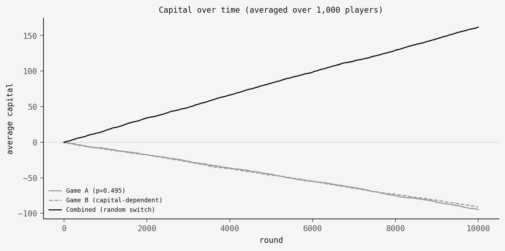
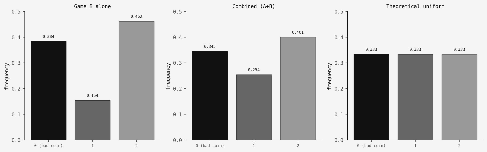
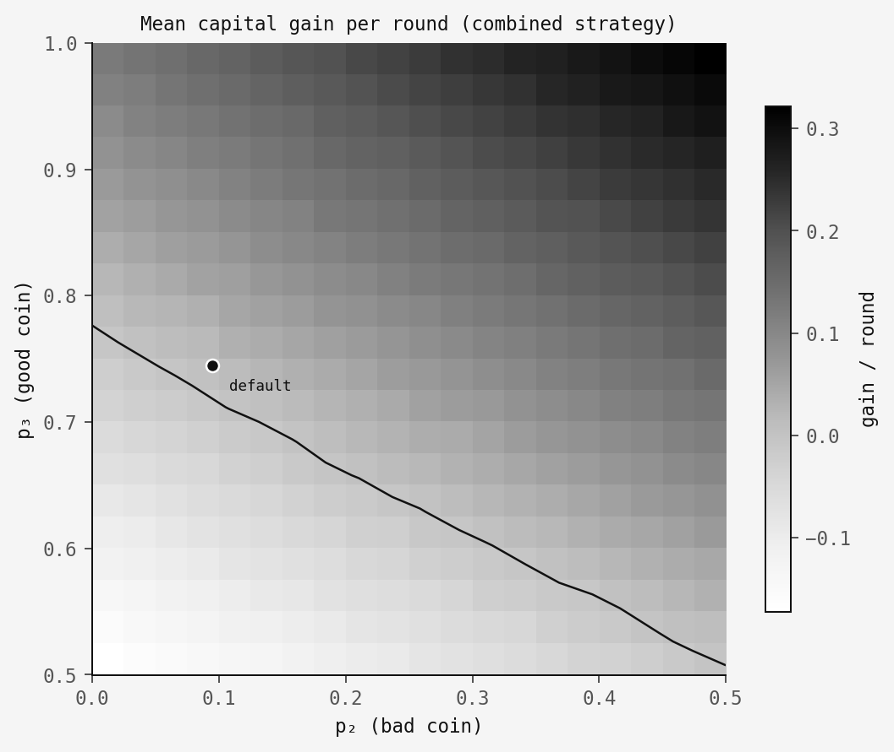

The intervention
Your friend is a terrible gambler. He's found two games at the casino and, through months of meticulous record-keeping, has proven beyond doubt that he loses money at both. So he does the only logical thing: he plays both games, switching between them at random. And starts winning.
You stage an intervention. But the math is on his side.
This is Parrondo's paradox, first described by the Spanish physicist Juan Parrondo in 1996 and formalised by Harmer & Abbott (1999) in Nature. Two individually losing strategies can combine into a winning one. It sounds like a scam. It's a theorem.
The two games
Game A is a simple biased coin. You win $1 with probability p1 and lose $1 otherwise. Set p1 = 0.495 — just below fair. A slow, steady bleed.
Game B is capital-dependent. If your total capital is divisible by 3, you flip a bad coin with win probability p2 = 0.095. Otherwise, you flip a good coin with win probability p3 = 0.745.
p1 = 0.495 · p2 = 0.095 · p3 = 0.745
Game B looks like it should win — after all, you flip the good coin two-thirds of the time. But it doesn't. The Markov chain dynamics push you into the "divisible by 3" state more often than you'd expect, and the bad coin eats your gains. Both games lose. Every simulation confirms it.
Now play both
Here's the twist. Each round, flip a fair coin to decide which game to play — A or B, fifty-fifty. I simulated 1,000 players over 10,000 rounds for each strategy:

Game A bleeds. Game B bleeds. The combined strategy climbs. Two losers make a winner.
Why it works: the ratchet
The explanation lives in the mod-3 state distribution. When you play Game B alone, the Markov chain settles into a steady state that overweights state 0 — the "divisible by 3" state where you face the bad coin. In my simulation, players spend about 38% of their time in state 0, far above the 33% you'd see with uniform distribution. This is enough to make the overall expected value negative.
Game A acts as a ratchet. Since Game A doesn't depend on capital mod 3, playing it disrupts Game B's unfavourable equilibrium. It redistributes your capital across the mod-3 states, pushing you away from state 0 and onto the good coin more often. Here's the distribution shift:

Game B alone: state 0 at 38.4%. Combined strategy: state 0 drops to 34.5%, much closer to the theoretical 33.3%. That small redistribution is enough to flip the expected value from negative to positive. The ratchet doesn't need to be dramatic — it just needs to nudge you off the bad equilibrium.
How robust is it?
You might wonder if this is a knife-edge result — fragile, dependent on hitting exactly the right parameters. It's not. Here's a sweep across (p2, p3) parameter space with p1 fixed at 0.495. The dark region is where the combined strategy wins:

There's a solid region above the contour line where two losing games produce a winning combination. The paradox is structurally robust, not a numerical accident.
The code
The core logic fits in a single function:
def play_round(capital, game, rng, p1=0.495, p2=0.095, p3=0.745):
"""Play one round. Returns +1 (win) or -1 (loss)."""
if game == 'A':
return 1 if rng.random() < p1 else -1
else: # Game B
if capital % 3 == 0:
return 1 if rng.random() < p2 else -1
else:
return 1 if rng.random() < p3 else -1That's it — the entire paradox in eight lines. Game A checks one probability. Game B checks your capital mod 3 and picks the corresponding coin. The full simulation with all three figures is available as code.py.
Takeaway
The deep lesson of Parrondo's paradox is that combining stochastic processes is not the same as combining their expected values. When dynamics are state-dependent, mixing strategies can create structure that neither strategy has alone. The random switching disrupts an unfavourable equilibrium, and that disruption alone is enough to flip the outcome.
This isn't just a mathematical curiosity. The same mechanism appears in biology — fluctuating environments can benefit populations that would decline in either environment alone. In physics, it connects to Brownian ratchets, where directed motion emerges from combining two processes that individually produce none.
So the next time someone you love finds two losing games at the casino — maybe hear them out. Check their modular arithmetic first.